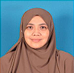
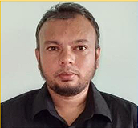

180+
Publications across agriculture, health, education, DRR,
climate & more
A multidisciplinary consultancy and research organization transforming evidence into action through monitoring, evaluation, research and capacity building across Bangladesh, Malaysia and beyond.
Established in 2018, Global MindLens builds on extensive experience since 2010, with a strong portfolio of publications, programmes and field operations.
Bold Research. Empowered Leadership.
_Shahreen-.jpeg)
Expertise: Monitoring, Evaluation, Disability Inclusion, Strategy
 Directorate of Primary Education and ex-RRRC).jpeg)
Expertise: Governance & Institutional Reform Specialist

Expertise: Public Policy, Governance, Training
.jpeg)
Expertise: Health Systems, Disability Care, Humanitarian Health

Expertise: Institutional Reform, Strategy

Expertise: Advocacy, Participatory Research

Expertise: Field Research, Coordination, Safeguarding

Expertise: Data Quality, Ethics, Team Management

Expertise: Research Design, Evaluation, Public Administration